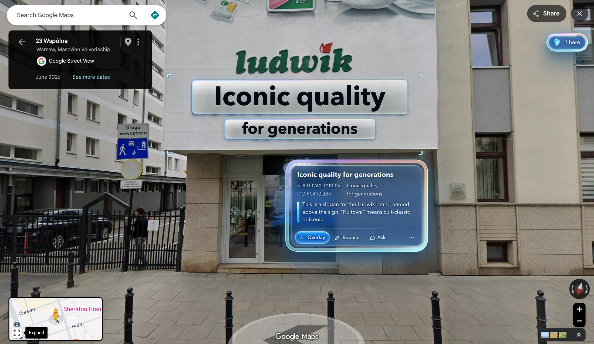
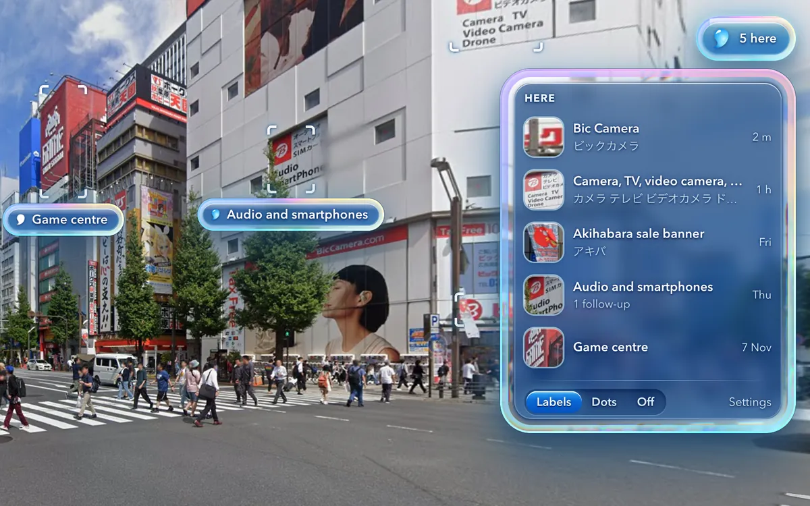

⌥ Option + drag
Draw a box
Drag a box round the thing. A chip says Reading, then grows into the answer.

gloss, noun: a note written beside a text to explain it.
Point at stuff and go “what?”
Gloss is a Chrome extension for Google Street View. Hold ⌥ Option and drag a box over a sign, a menu, a poster or a building. It tells you what it says or what it is, in English.
Version 0.3.2, for Chrome on a computerGloss runs in Chrome on a computer It runs on shared keys until 14 December 2026. Then you bring your own. Download the zip anyway
Try it here. Hold ⌥ Option and drag a box over a cloud.

Imagery © GoogleHow you use it
Each one starts with ⌥ Option held down. On Windows and Linux the key is Alt. Without it, Gloss leaves your clicks and drags alone, apart from a click on one of its own labels.
⌥ Option + drag
Drag a box round the thing. A chip says Reading, then grows into the answer.
⌥ Option + click
Click a spot when a box is more than you need. A small ring marks it, with its label and card.
⌥ Option + ⇧ Shift + drag
Drag the box, then type what you want to know. Enter sends it. Esc cancels.
 Imagery © Google
Imagery © Google
A finished answer rests as a small label under the thing. Click it for the whole card. Click anywhere else, or press Esc, to close it.
All three work on this page. It is rigged, though: it only knows about itself. The real thing reads whatever you box.
What you get
No sidebar and no chat window. What you asked stays on the spot where you asked it.
 Imagery © Google
Imagery © Google
The answer first, in English. Under it the original writing and how to say it, and a note only when one is worth having. Ask a follow-up and the reply is added to the same card.
The three dots copy either text, delete the note, and show how long the answer took.

Imagery © GoogleEvery finished answer is saved by itself. Come back next week and your notes are where you left them.
The pill at the top right counts the notes on this view. Click it for the saved list: notes here, notes within 150 m and the latest 20. Its foot sets how much shows: Labels, Dots or Off.
Step up the street, within about 120 m, and they are still there. From another spot Gloss does not pretend to know exactly where the sign is: a small ring and a label mean “about here”, and one press takes you back to where you asked.


Where Gloss can place it reliably, the English is drawn on the sign itself, line by line, on the sign’s own colour. On a sign that slopes, or is seen at an angle, the English slopes with it, and small lines are set at the size of the sign’s own lettering. It follows the picture as you look around.
It is strict about “reliably”. A label on the wrong line is worse than none, so some lines get it and the rest keep their English in the card. A line too small to draw on gets its English when you zoom in, and the card says so.
Slide the bar: the street as it is on the left, with Gloss on the right.
 Imagery © Google
Imagery © Google
 BeforeImagery © Google
BeforeImagery © Google
 After
Imagery © Google
After
Imagery © Google
The card’s Repaint button asks an image model to letter the English onto the sign, in the sign’s own style. It works in any language, Vietnamese or Turkish as much as Japanese. It takes about 20 to 45 seconds, or up to two minutes when the first try fails its check and it tries again.
Nothing is shown unless it passes a check. Gloss reads the result back without being told what it should say, and every word must match. Only the lettered lines, and what sits right beside them, come from the image model. The rest is Street View’s own picture. One that fails twice is never shown.
Press and hold the AI repaint badge to see the original. It works the same way in Gloss.
Install
Gloss is not in the Chrome Web Store. You load it into Chrome from a folder.
Gloss 0.3.2 One zip. Two shared keys are built in, so there is nothing to sign up for.
Gloss-0.3.2.zipThe button above. It is the only download there is.
You get one folder, Gloss-0.3.2. Put it somewhere it can stay: Chrome runs the extension from that folder. Already have Gloss? Do not load the new folder beside the old one, or your saved notes stay behind with the old one. Copy the new files over your old folder, then press the reload arrow on Gloss at chrome://extensions.
A web page may not link there, so paste this into Chrome’s address bar.
chrome://extensionsThe switch is at the top right of that page.
Pick the Gloss-0.3.2 folder. Gloss appears in the list.
Open Google Maps and go into Street View. If a Street View tab was already open, refresh it. Then hold ⌥ Option and drag.
Steps 4 and 5, marked on a drawing of Chrome’s extensions page.
Chrome does not ask about permissions when you load a folder. Gloss does have one: to read and change your data on all websites. Its Details page shows it. Why it needs it is in the fine print.
Updating. Your notes and keys belong to the folder Chrome loaded. Put a new version’s files into that same folder and press the reload arrow on Gloss’s card. A second folder is a second Gloss: it starts empty, and the older one must be turned off, or both act on the page.
Keys
Gloss runs on two shared keys that are built in, so there is nothing to set up. They stop on 14 December 2026. Everyone with this copy shares them and someone else pays, so go easy. The repaint key has a $20 limit in all.
When a shared key has expired or run out, the card says so and has a Settings button. Put your own in there: Anthropic key (reading), from the Anthropic Console, and OpenRouter key (repaint), from openrouter.ai/keys. You can add one and leave the other on the shared key.
Settings also opens from the Gloss icon in Chrome’s toolbar (under the puzzle-piece menu until you pin it), and from the foot of the saved list. Your keys are kept in the extension’s own storage, in your browser.
| From the start | Your own, by 14 December 2026 | |
|---|---|---|
| Readingevery question and follow-up | Shared key, built in | Anthropic keya fraction of a cent each |
| Repaintonly when you press it | Shared key, built in | OpenRouter key2 to 5 cents each |
Reading is done by a vision model, Claude Haiku 5.5, so that key is an Anthropic one. A repaint is lettered by an image model, reached through OpenRouter. Your own key is used before the shared one. The prices are what you pay with your own keys. A repaint that has to try twice costs about 10 cents. Repaint uses both keys: the image model paints, and Claude checks the result.
The fine print
Nothing goes to Anthropic or OpenRouter until you ask about something. Then this goes, and only this.

1What you boxed

2The whole view, with your box drawn on it
The permission. Gloss has a wide one: to read and change your data on all websites. Taking the picture of the tab when you Option-drag, rather than click the toolbar icon, needs it. Gloss only runs on map pages.